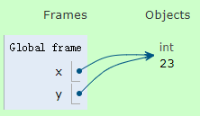
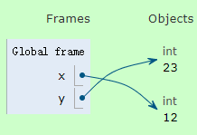
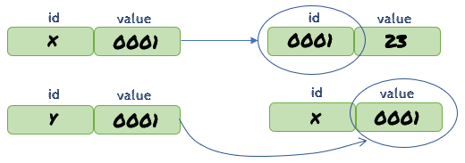
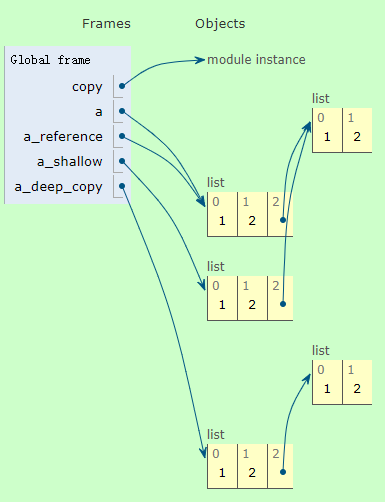
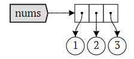

3.2.浅拷贝和深拷贝
name与value
引用（reference）：一个可以让程式间接存取于电脑记忆体或其他储存装置中一特定资料的值。 一般而言，引用会是资料储存于记忆体或储存装置中的实体位址 。 因此，引用亦常被称为该资料的指标或位址。
name是value的引用。
在python里面，一个变量保存的值是某个对象的引用。Python赋值语句将左侧的符号名称与右侧的值相关联。在Python中，我们说名称引用值，或者名称是对值的引用
下次我们使用这个名称时，便得到与名称相关联的值。
多个name可以引用同一个value。
x = 23 y = x

x和y具有相同的状态：每个都以完全相同的方式引用该值。
名称是独立于其他名称重新分配的。
如果两个名称引用相同的值，则不会链接这两个名称。重新分配其中一个不会导致另一个也被重新分配：
x = 23 y = x x = 12

值一直存在，直到没有名称引用它
Python会跟踪每个值有多少引用，并自动清除没有引用的值。这被称为“垃圾收集”，意味着你不必清楚值，当它们不再需要时它们会自行消失。
Assignment
assignment永远不会复制数据。
当值具有多个名称时，很容易混淆并将其视为两个名称和两个值：
x = 23 y = x
但是给名称分配值永远不会复制数据，它永远不会创建新值。分配只是使左侧的名称引用右侧的值。在这种情况下，我们只有一个23，x和y都引用它，就像我们在上图中看到的那样。
分配只是使左侧的名称引用右侧的值。这句话是什么意思呢？
x = 23 y = x
当python执行上面的代码，assignment的过程如下图所示：
我们查看x和y的内存地址，可以看到x和y的内存地址一样，这也说明了该过程并没有创建新值。
print("x的内存地址是：" + str(id(x))) print("y的内存地址是：" + str(id(y)))
x的内存地址是：140728107374080 y的内存地址是：140728107374080
同样地，如果我们这样赋值，也不会创建新值。
x = 23 y = 23 print("x的内存地址是：" + str(id(x))) print("y的内存地址是：" + str(id(y)))
x的内存地址是：140728107374080 y的内存地址是：140728107374080
当我们有更复杂的值时，事情变得更有趣，比如列表：
x = [1,2,3] y = [1,2,3] print("x的内存地址是：" + str(id(x))) print("y的内存地址是：" + str(id(y)))
x的内存地址是：2275072084616 y的内存地址是：2275073247240
虽然我们给x和y都赋值了相同的list，但是可以看到x和y绑定了不同的对象，因为它们的内存地址并不一样。为什么会这样呢？
原因在于 23 是 int 类型的对象，而 int 类型在python中属于 immutable 的类型；list 则属于 mutable 的类型。当然，mutable、immutable只是python语言的一个规定。
因为 int 是immutable的，所以如果给x重新赋值，无论怎么样都不会影响到y。
x = 23 y = x x = 12 y x = 23 y = 23 x = 12 y
23
但是 mutable 类型的值则不一样，如果x和y存储的是同一个引用，则给其中一个名称赋值时，会影响另一个名称。
x = [1,2,3] y = x print("x的内存地址是：" + str(id(x))) print("y的内存地址是：" + str(id(y))) # 给x重新赋值 x[0] = 0 y
x的内存地址是：2275068173704 y的内存地址是：2275068173704
[0, 2, 3]
所以，为了避免混乱，当我们直接把一个相同的值赋值给不同的名称时，python会新建对象。
x = [1,2,3] y = [1,2,3] print("x的内存地址是：" + str(id(x))) print("y的内存地址是：" + str(id(y))) # 给x重新赋值 x[0] = 0 y
x的内存地址是：2275073185800 y的内存地址是：2275073246792
[1, 2, 3]
通过上面的示例代码，我们可以知道：
通过一个对象的所有名称可以看到值的变化。
一个对象的所有名字是什么意思？例如下面的代码，x和y都是同一个对象的名字，因为x和y储存的引用是相同的。
x = [1,2,3] y = x print("x的内存地址是：" + str(id(x))) print("y的内存地址是：" + str(id(y)))
x的内存地址是：2275073466632 y的内存地址是：2275073466632
Assignment陷阱——mutable 和immutable
神话：Python以不同的方式分配可变和不可变的值。
因为mutable对象是不可更改的，immutable对象则可以更改，人们可能会觉得mutable对象和immutable对象的值分配方式不一样。但事实上，mutable对象和immutable对象所有的赋值的方式都是一样的。
Assignment陷阱——浅拷贝和深拷贝
神话：值是有范围的。
在python中存在作用域这样的概念，人们可能会觉得作用域指的是值（对象）的作用范围，但事实上，值是没有范围的，作用域指的是名称的作用范围。也就是说，在上层作用域，不能使用下层作用域的名称来使用值。
我们可以定义一个简单的函数与验证这点。
def check_name_space_range(x): print("x的内存地址是：" + str(id(x))) # 先在最外层的作用域赋值，并打印地址 a = 10 print("a的内存地址是：" + str(id(a))) check_name_space_range(a)
a的内存地址是：140728107373664 x的内存地址是：140728107373664
很明显，在内外层作用域的值都是同一个。
因为值没有范围，这就可能出现一些惊喜。
def variable_change(x): x[0] = 10 return x a = [1,2,3] a_other = variable_change(a) print(a) print(a_other)
[10, 2, 3] [10, 2, 3]
可以看到，a、a_other都被改变了，实际上a、a_other都是同一个对象。
print("a的内存地址是：" + str(id(a))) print("a_other的内存地址是：" + str(id(a_other)))
a的内存地址是：2275072212872 a_other的内存地址是：2275072212872
因此，如果要在函数里面更改参数的值，最好复制一个副本。
def variable_change_shallow(x): if isinstance(x,list): x = x.copy() x[0] = 10 else: pass return x a = [1,2,3] a_other = variable_change_shallow(a) print(a) print(a_other) print("a的内存地址是：" + str(id(a))) print("a_other的内存地址是：" + str(id(a_other)))
[1, 2, 3] [10, 2, 3] a的内存地址是：2275073247560 a_other的内存地址是：2275073166216
a的值并没有改变，上面的结果看似是没问题的，但还是会有新的惊喜。
我们来修改一下variable_change_shallow函数
def variable_change_shallow(x): if isinstance(x,list): x = x.copy() x[0][0]= 10 else: pass return x a = [[1,2],2,3] a_other = variable_change_shallow(a) print(a) print(a_other) print("a的内存地址是：" + str(id(a))) print("a_other的内存地址是：" + str(id(a_other)))
[[10, 2], 2, 3] [[10, 2], 2, 3] a的内存地址是：2275073245384 a_other的内存地址是：2275072212872
惊喜就是a的值也改变了。因为x.copy()只是浅拷贝。
在python里面有三种方式去引用某个值：1. 引用另一个变量2. 浅拷贝3. 深拷贝
这三种方式是有区别的。
import copy a = [1,2,[1,2]] a_reference = a a_shallow = copy.copy(a) a_deep_copy = copy.deepcopy(a)
变量a和a_reference都是同一个对象的名称。

浅拷贝得到变量a_shallow，它是一个新对象，但a_shallow的第三个元素a_shallow[2]却是一个已经存在的对象，这和a、a_reference一样。

深拷贝得到变量a_deep_copy，它是一个新对象，并且它的每一个元素也是新的对象。

如果浅拷贝的对象包含了mutable对象，则mutable对象不会拷贝；而深拷贝则会完整拷贝对象。
Assignment陷阱——引用不仅仅是名称
以上所有示例都使用名称作为值的引用，但引用也可以是其他东西。Python有许多复合数据结构，每个结构都包含对值的引用：列表元素，字典键和值，对象属性等。其中每一个都可以在赋值符号的左侧使用，以上所有细节都适用于它们。任何可以出现在赋值语句左侧的内容都是引用，在本文中说“名称”的任何地方都可以用“引用”替换。
在上面的示意图中，数字被显示为元素，但实际上，每个元素都是对数字的引用，因此它应该像这样绘制：
nums = [1,2,3]

但这很快变得复杂，所以上面的绘图用了视觉速记：

如果你有列表元素引用其他可变值，例如子列表，请务必记住列表元素只是对值的引用。
这是一些其他assignment。这些左侧中的每一个都是引用（reference）：
my_obj.attr = 23 my_dict[key] = 24 my_list[index] = 25 my_obj.attr[key][index].attr = "etc, etc"
注意的是i = x 指定了名称i，但i[0] = x并不是指定名称i，而是指定了i的值的第一个元素。
很多东西都是Assignment
正如上面所说，许多东西都可以作为引用，python里面有很多东西可以作为assignments。
这些行中的每一行都是名称X的赋值：
X = ... for X in ... [... for X in ...] (... for X in ...) {... for X in ...} class X(...): def X(...): def fn(X): ... ; fn(12) with ... as X: except ... as X: import X from ... import X import ... as X from ... import ... as X
注意，我并不是说这些语句像assignments，我的意思是这些语句都是赋值。它们都使名称X引用某个值。上面所说的关于赋值的所有内容都适用于所有这些赋值。
在大多数情况下，这些语句将X定义在与语句相同的作用域内。Python 2和Python 3之间的细节略有不同。但它们都是真正的赋值，而且每个事实都是关于赋值适用于所有这些。
Python通过赋值来传递函数参数。
让我们来看看这些上面assignment列表中最有趣的一个：调用一个函数。当我定义一个函数时，我将其参数命名为：
def my_func(x, y): return x+y
这里x和y是函数my_func的参数。当我调用my_func时，我提供了实际值作为函数的参数。这些值分配给参数名称，就像使用了赋值语句一样：
def my_func(x, y): return x+y print(my_func(8, 9))
17
调用my_func时，8被赋值给名称x，9被赋值给名称y。该赋值与我们一直在讨论的简单赋值语句完全相同。名称x和y是函数的本地名称（local），因此当函数返回时，这些名称就会消失。但是，如果它们引用的值仍然被其他名称引用，则值仍然存在。
就像所有其他赋值一样，可变值可以传递给函数，并且通过其所有名称可以看到对值的更改。这在
名称和值的一些细节
任何名称都可以随时引用任何值。
Python是动态类型的，这意味着名称没有类型。任何名称都可以随时引用任何值。名称可以引用整数，然后引用字符串，然后引用函数，然后引用模块。当然，这可能是一个非常混乱的程序，你不应该这样做，但Python语言不会介意。
名称没有类型，值没有范围。
正如名称没有类型一样，值也没有范围。当我们说一个函数有一个局部变量时，我们的意思是该名称的作用域是函数：你不能在函数外部使用该名称，当函数返回时，名称将被销毁。但是正如我们所看到的，如果名称的值具有其他引用，它将继续在函数调用之外。它是本地名称，而不是本地值。
值不能删除，只有名称可以删除。
Python的内存管理对其行为至关重要，你不仅不必删除值，而且无法删除值。
nums = [1, 2, 3] del nums
这不会删除值nums，它会删除名称nums。该名称将从其范围中删除，然后通常的引用计数开始执行：如果nums的值只有一个引用，则将回收该值。但如果它有其他引用，那么它不会被回收。
神话：Python没有变量。
有些人喜欢说，“Python没有变量，它有名字。”这个口号具有误导性。事实是Python有变量，它们的工作方式与C中的变量不同。
名称是Python的变量：它们引用值，并且这些值可以在程序的过程中发生变化（变化）。仅仅因为另一种语言（尽管是一种重要的语言）表现不同，没有理由将Python描述为没有变量。